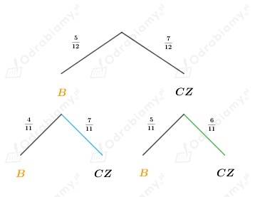

Z treści zadania wiemy, że w urnie jest 5 kul białych i 7 czarnych, więc łącznie jest 12 kul.
Losujemy kolejno dwie kule bez zwracania.
A - za drugim razem wylosowano kulę czarną
B1 - za pierwszym razem wylosowano kulę białą
B2 - za pierwszym razem wylosowano kulę czarną
Narysujmy drzewo obrazujące opisana sytuację:

Z rysunku odczytujemy, że:
(kolorem niebieskim została zaznaczona gałąź, która nas interesuje)
oraz
(kolorem zielonym została zaznaczona gałąź, która nas interesuje)
W urnie są cztery kule białe oznaczone numerami 1, 2, 3, 4, trzy kule czarne oznaczone
numerami 1, 2, 3 oraz sześć kul niebieskich oznaczonych numerami 1, 2, 3, 4, 5, 6.
Losujemy jedną kulę.
Wszystkich kul w urnie jest łącznie: 4+3+6=13.
Niech Ω - zbiór wszystkich możliwych zdarzeń elementarnych, więc:
a)
A - wylosowano kulę o numerze parzystym
B - wylosowano kulę białą
Wiemy, że kul białych jest łącznie 4, zatem: |B|=4.
Obliczamy prawdopodobieństwo zdarzenia B:
Wiemy, że kul o numerze parzystym, które są białe mamy łącznie 2, zatem |A ∩ B|=2
Obliczamy prawdopodobieństwo zdarzenia A ∩ B:
Obliczamy prawdopodobieństwo warunkowe:
b)
A - wylosowano kulę białą
B - wylosowano kulę o numerze parzystym
Wiemy, że kul o numerze parzystym jest łącznie 6, zatem: |B|=6.
Obliczamy prawdopodobieństwo zdarzenia B:
Wiemy, że kul białych, które mają numer parzysty mamy łącznie 2, zatem |A ∩ B|=2
Obliczamy prawdopodobieństwo zdarzenia A ∩ B:
Obliczamy prawdopodobieństwo warunkowe:
Z treści zadania wiemy, że rzucamy trzykrotnie kostką.
Niech Ω - zbiór wszystkich możliwych zdarzeń elementarnych, więc:
a)
A - suma wyrzuconych oczek jest równa 13
B - w drugim rzucie wypadły 3 oczka
Jeśli w drugim rzucie wypadły 3 oczka, to:
Obliczamy prawdopodobieństwo zdarzenia B:
Wiemy, że suma wyrzuconych oczek jest równa 13 i za drugim razem wypadnie 3, gdy:
Wobec tego:
|A ∩ B|=3
Obliczamy prawdopodobieństwo zdarzenia A ∩ B:
Obliczamy prawdopodobieństwo warunkowe:
b)
A - w drugim i trzecim rzucie wypadła nieparzysta liczba oczek ({1, 3, 5})
B - suma oczek w trzech rzutach była równa 6
Jeśli suma oczek w trzech rzutach jest równa 6, to:
Obliczamy prawdopodobieństwo zdarzenia B:
Wiemy, że suma wyrzuconych oczek jest równa 6 i w drugim oraz trzecim rzucie
wypadła nieparzysta liczba oczek, gdy:
Wobec tego:
|A ∩ B|=3
Obliczamy prawdopodobieństwo zdarzenia A ∩ B:
Obliczamy prawdopodobieństwo warunkowe:
Z treści zadania wiemy, że w urnie są kule ponumerowane od 1 do 9.
Losujemy kolejno dwie kule bez zwracania.
Numery wylosowanych kul zapisane w kolejności losowania tworzą liczbę dwucyfrową.
Niech Ω - zbiór wszystkich możliwych zdarzeń elementarnych, więc:
a)
A - utworzona liczba jest podzielna przez 3
Aby liczba była podzielna przez 3, to suma jej cyfr musi być podzielna przez 3, więc:
Liczy dwucyfrowe podzielne przez 3 tworzą ciąg arytmetyczny, którego wartość pierwszego
wyrazu jest równa 12, ostatni wyraz ma wartość 99, a różnica jest równa 3.
Korzystając ze wzoru na n-ty wyraz w ciągu arytmetycznym dostajemy:
Zatem liczb dwucyfrowych w tym zbiorze podzielnych przez 3 mamy łącznie: 30-3-3=24
(odejmujemy 3, ponieważ do tego zbioru nie należą liczby 30, 60 i 90, które również są podzielne
przez 3 oraz odejmujemy kolejne 3 liczby: 33, 66 i 99, bo losujemy bez zwracania, więc cyfry w
liczbie nie mogą się powtarzać).
Obliczamy prawdopodobieństwo zdarzenia A:
b)
A - utworzona liczba jest podzielna przez 3
B - pierwszą wylosowana liczbą jest 1
Wobec tego:
zatem |B|=8
Obliczamy prawdopodobieństwo zdarzenia B:
Wiemy, że suma pierwsza wylosowana liczba jest równa 1 i utworzona liczba jest podzielna przez 3, gdy:
Wobec tego:
|A ∩ B|=3
Obliczamy prawdopodobieństwo zdarzenia A ∩ B:
Obliczamy prawdopodobieństwo warunkowe:
c)
A - utworzona liczba jest podzielna przez 3
B - pierwszą wylosowana liczbą jest 6
Wobec tego:
zatem |B|=8
Obliczamy prawdopodobieństwo zdarzenia B:
Wiemy, że suma pierwsza wylosowana liczba jest równa 6 i utworzona liczba jest podzielna przez 3, gdy:
Wobec tego:
|A ∩ B|=2
Obliczamy prawdopodobieństwo zdarzenia A ∩ B:
Obliczamy prawdopodobieństwo warunkowe:
Z treści zadania wiemy, że rzucamy dwa razy kostką.
Niech Ω - zbiór wszystkich możliwych zdarzeń elementarnych więc:
A - wypadła co najmniej raz szóstka
a)
B - suma oczek, które wypadły w obu rzutach jest nieparzysta
Aby suma oczek wyrzuconych w dwóch rzutach była nieparzysta, to jedna liczba
musi być parzysta, a druga nieparzysta.
Zatem:
Obliczamy prawdopodobieństwo zdarzenia B:
Wiemy, że suma w obu rzutach jest nieparzysta i wypadła co najmniej raz 6, gdy:
Wobec tego:
|A ∩ B|=6
Obliczamy prawdopodobieństwo zdarzenia A ∩ B:
Obliczamy prawdopodobieństwo warunkowe:
b)
B - w pierwszym rzucie wypadło więcej oczek niż w drugim
Aby w pierwszym rzucie wypadło więcej oczek niż w drugim, to:
Zatem:
Obliczamy prawdopodobieństwo zdarzenia B:
Wiemy, że aby w pierwszym rzucie wypadło więcej oczek niż w drugim i aby
wypadła co najmniej raz szóstka, to:
Wobec tego:
|A ∩ B|=5
Obliczamy prawdopodobieństwo zdarzenia A ∩ B:
Obliczamy prawdopodobieństwo warunkowe:
Z treści zadania wiemy że: A, B ⊂ Ω.
a)
Obliczamy prawdopodobieństwo warunkowe:
wiemy, że:
więc:
zatem:
b)
Obliczamy prawdopodobieństwo warunkowe:
wiemy, że:
więc:
zatem:
c)
Obliczamy prawdopodobieństwo warunkowe:
wiemy, że:
więc:
zatem: